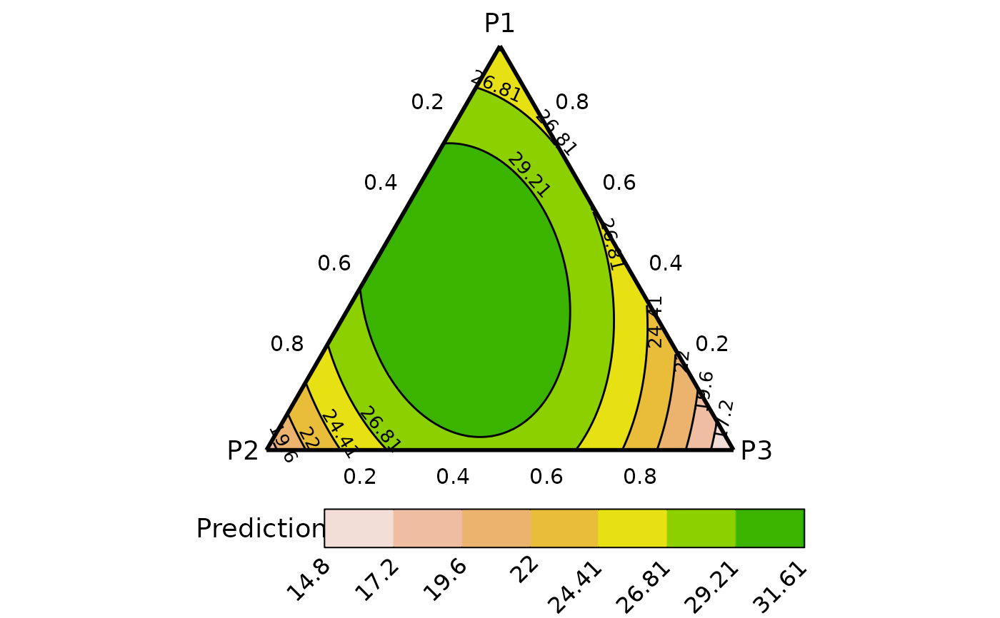
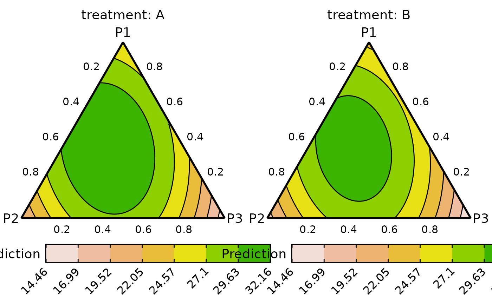
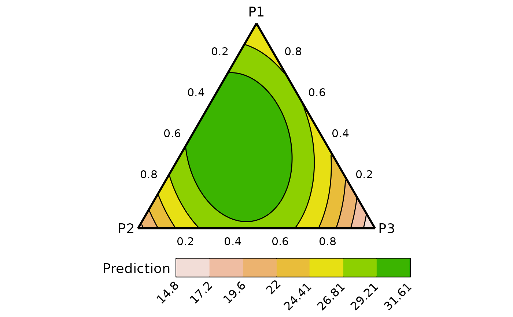

Prepare data for showing contours in ternary diagrams.
ternary_data.RdThe data preparation function for creating an equally spaced grid of three
compositional variables (i.e., the three variables sum to 1 at each point
along the grid). The projection of each point in the grid on the x-y plane is
also calculated. This data can be used with a relevant statistical model
to predict the response across the ternary surface. The output of this
function can then be passed to the ternary_plot function to
visualise the change in the response as a contour plot.
Note: This function works only for models with three compositional
predictors. For models with more than three compositional predictors see
conditional_ternary.
Arguments
- prop
A character vector specifying the columns names of compositional variables whose proportions to manipulate. Default is ".P1", ".P2", and ".P3".
- add_var
A list or data-frame specifying values for additional variables in the model other than the proportions (i.e. not part of the simplex design). This could be useful for comparing the predictions across different values for a non-compositional variable. If specified as a list, it will be expanded to show a plot for each unique combination of values specified, while if specified as a data-frame, one plot would be generated for each row in the data.
- resolution
A number between 1 and 10 describing the resolution of the resultant graph. A high value would result in a higher definition figure but at the cost of being computationally expensive.
- prediction
A logical value indicating whether to pass the final data to the `add_prediction` function and append the predictions to the data. Default value is
TRUE, but often it would be desirable to make additional changes to the data before making any predictions, so the user can set this toFALSEand manually call the `add_prediction` function.- ...
Arguments passed on to
add_predictionmodelA regression model object which will be used to make predictions for the observations in `data`. Will override `coefficients` if specified.
coefficientsIf a regression model is not available (or can't be fit in R), the regression coefficients from a model fit in some other language can be used to calculate predictions. However, the user would have to ensure there's an appropriate one-to-one positional mapping between the data columns and the coefficient values. Further, they would also have to provide a variance-covariance matrix of the coefficients in the `vcov` parameter if they want the associated CI for the prediction or it would not be possible to calculate confidence/prediction intervals using this method.
vcovIf regression coefficients are specified, then the variance-covariance matrix of the coefficients can be specified here to calculate the associated confidence interval around each prediction. Failure to do so would result in no confidence intervals being returned. Ensure `coefficients` and `vcov` have the same positional mapping with the data.
coeff_colsIf `coefficients` are specified and a one-to-one positional mapping between the data-columns and coefficient vector is not present. A character string or numeric index can be specified here to reorder the data columns and match the corresponding coefficient value to the respective data column. See the "Use model coefficients for prediction" section in examples.
conf.levelThe confidence level for calculating confidence/prediction intervals. Default is 0.95.
intervalType of interval to calculate:
- "none" (default)
No interval to be calculated.
- "confidence"
Calculate a confidence interval.
- "prediction"
Calculate a prediction interval.
Value
A data-frame with the following columns and any additional columns specified in `add_var` parameter
- .x
The x component of the x-y projection of the simplex point.
- .y
The y component of the x-y projection of the simplex point.
- .P1
The first variable whose proportion is varied across the simplex.
- .P2
The second variable whose proportion is varied across the simplex.
- .P3
The third variable whose proportion is varied across the simplex.
- .add_str_ID
An identifier column for grouping the cartesian product of all additional columns specified in `add_var` parameter (if `add_var` is specified).
- .Pred
The predicted response for each observation (if `prediction` is
TRUE).- .Lower
The lower limit of the prediction/confidence interval for each observation.
- .Upper
The upper limit of the prediction/confidence interval for each observation.
Examples
library(DImodels)
library(dplyr)
## Load data
data(sim0)
## Fit model
mod <- lm(response ~ 0 + (p1 + p2 + p3)^2, data = sim0)
## Prepare data for creating a contour map of predicted response over
## the ternary surface
## Remember to specify prop with the same character values as the names
## of the variables in the model containing the prop.
plot_data <- ternary_data(resolution = 1, model = mod,
prop = c("p1", "p2", "p3"))
## Show plot
ternary_plot(data = plot_data)
#> ✔ Created plot.

## Can also add any additional variables independent of the simplex using
## the `add_var` argument
sim0$treatment <- rep(c("A", "B", "C", "D"), each = 16)
new_mod <- update(mod, ~. + treatment, data = sim0)
plot_data <- ternary_data(prop = c("p1", "p2", "p3"),
add_var = list("treatment" = c("A", "B")),
resolution = 1, model = new_mod)
## Plot to compare between additional variables
# \donttest{
ternary_plot(plot_data)
#> ✔ Created all plots.

# }
## It could be desirable to take the output of this function and add
## additional variables to the data before making predictions
## Use `prediction = FALSE` to get data without any predictions
contour_data <- ternary_data(prop = c("p1", "p2", "p3"),
model = mod,
prediction = FALSE,
resolution = 1)
head(contour_data)
#> p1 p2 p3 .x .y
#> 1 0 1.0000000 0.000000000 0.000000000 0
#> 2 0 0.9949749 0.005025126 0.005025126 0
#> 3 0 0.9899497 0.010050251 0.010050251 0
#> 4 0 0.9849246 0.015075377 0.015075377 0
#> 5 0 0.9798995 0.020100503 0.020100503 0
#> 6 0 0.9748744 0.025125628 0.025125628 0
## Manually add the treatment variable
contour_data$treatment <- "A"
## Make predictions
head(add_prediction(data = contour_data, model = new_mod))
#> p1 p2 p3 .x .y treatment .Pred
#> 1 0 1.0000000 0.000000000 0.000000000 0 A 19.16711
#> 2 0 0.9949749 0.005025126 0.005025126 0 A 19.38754
#> 3 0 0.9899497 0.010050251 0.010050251 0 A 19.60556
#> 4 0 0.9849246 0.015075377 0.015075377 0 A 19.82115
#> 5 0 0.9798995 0.020100503 0.020100503 0 A 20.03433
#> 6 0 0.9748744 0.025125628 0.025125628 0 A 20.24508
## Manually add the interaction terms
contour_data <- contour_data %>%
mutate(`p1:p2` = p1*p2,
`p2:p3` = p2*p3,
`p1:p3` = p1*p3)
## Add predictions using model coefficients
contour_data <- add_prediction(data = contour_data,
coefficient = mod$coefficient)
head(contour_data)
#> p1 p2 p3 .x .y treatment p1:p2 p2:p3 p1:p3
#> 1 0 1.0000000 0.000000000 0.000000000 0 A 0 0.000000000 0
#> 2 0 0.9949749 0.005025126 0.005025126 0 A 0 0.004999874 0
#> 3 0 0.9899497 0.010050251 0.010050251 0 A 0 0.009949244 0
#> 4 0 0.9849246 0.015075377 0.015075377 0 A 0 0.014848110 0
#> 5 0 0.9798995 0.020100503 0.020100503 0 A 0 0.019696472 0
#> 6 0 0.9748744 0.025125628 0.025125628 0 A 0 0.024494331 0
#> .Pred
#> 1 18.61551
#> 2 18.83595
#> 3 19.05396
#> 4 19.26956
#> 5 19.48273
#> 6 19.69349
## Note: Add predictions via coefficients would not give confidence intervals
## to get CIs using coefficients we need to specify the variance-covariance
## matrix using `vcov`
contour_data <- add_prediction(data = contour_data,
coefficient = mod$coefficient,
vcov = vcov(mod),
interval = "confidence")
head(contour_data)
#> p1 p2 p3 .x .y treatment p1:p2 p2:p3 p1:p3
#> 1 0 1.0000000 0.000000000 0.000000000 0 A 0 0.000000000 0
#> 2 0 0.9949749 0.005025126 0.005025126 0 A 0 0.004999874 0
#> 3 0 0.9899497 0.010050251 0.010050251 0 A 0 0.009949244 0
#> 4 0 0.9849246 0.015075377 0.015075377 0 A 0 0.014848110 0
#> 5 0 0.9798995 0.020100503 0.020100503 0 A 0 0.019696472 0
#> 6 0 0.9748744 0.025125628 0.025125628 0 A 0 0.024494331 0
#> .Pred .Lower .Upper
#> 1 18.61551 17.10673 20.12430
#> 2 18.83595 17.35220 20.31969
#> 3 19.05396 17.59460 20.51332
#> 4 19.26956 17.83392 20.70519
#> 5 19.48273 18.07015 20.89532
#> 6 19.69349 18.30327 21.08370
## Show plot
# \donttest{
ternary_plot(contour_data)
#> ✔ Created plot.

# }
## See `?ternary_plot` for options to customise the ternary_plot